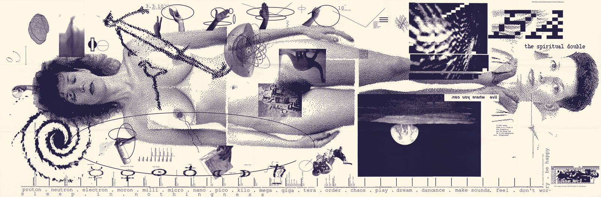

"Does it Make Sense?"
This is the artpiece that changed the digital artworld for the years to come. This is coming from a time where Swiss style, grid designs, and emphasis on type were the norm. This work allowed Greiman to be taken seriously and pushed others to embrace the world of digital design.
Overview
April Greiman occupies a pivotal position in the history of late twentieth‑century graphic design, particularly in the transition from analog to digital visual communication. Her work is frequently cited in design scholarship as emblematic of the shift toward postmodern aesthetics and the early adoption of computer‑based tools. Through her experimental approach, Greiman challenged the conventions of the International Typographic Style and helped redefine the possibilities of visual form in an increasingly technological culture.